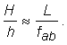
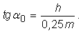
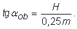
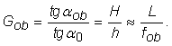
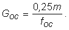
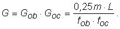

Fig. 1.
 Imaginea formată de obiectivul unui microscop.
Imaginea formată de obiectivul unui microscop.Obiectivul unui microscop este o lentilă convergentă (sau un sistem de lentile convergent) care formează o imagine reală, mărită şi răsturantă a obiectului.
Punerea la punct a microscopului se face astfel încât obiectul se află, faţă de obiectiv, la o distanţă doar cu puţin mai mare decât distanţa focală a obiectivului (figura 1).
Imaginea formată de obiectivul unui microscop. Provocarea 1
Provocarea 1
Cât este grosismentul obiectivului unui microscop?
Din triunghiurile asemenea, formate de raza care trece prin centrul obiectivului, obiectul şi imaginea acestuia (figura 1), avem:

Dacă ai privi obiectul de la distanţa mimină de vedere clară, tangenta unghiului sub care l−ai vedea ar fi:

Dacă ai privi, tot de la distanţa minimă de vedere clară, imaginea dată de obiectiv, tangenta unghiului sub care ai vedea−o ar fi:

Aşadar, grosismentul obiectivului este:

Ocularul microscopului funcţionează ca o lupă, preluând imaginea dată de obiectiv şi furnizând ochiului o imagine virtuală, răsturnată în raport cu obiectul original şi mult mărită.
Grosismentul ocularului este, ca şi grosismentul oricărei lupe,

Aşadar, grosismentul microscopului este:

Lungimea L este practic egală cu lungimea tubului microscopului. Mărind L, poate fi mărit grosismentul microscopului!
 Activitatea experimentală 1
Activitatea experimentală 1
Modifică microscopul realizat de tine, astfel încât să aibă tubul mai lung.
Verifică dacă ai obţinut un grosisment mai mare.
Provocarea 2
De ce oare nu se construiesc microscoape cu grosisment oricât de mare, pur şi simplu folosind lentile obişnuite şi un tub foarte lung?